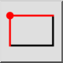
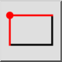
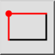
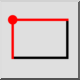

Прямоугольник с заданным размером
Панель инструментов / Иконка:
 

Меню: Начертить > Фигура > Прямоугольник с заданным размером
Горячая клавиша: R, S
Команды: rectanglesize | linerectanglesize | rs
Это автоматический перевод.
Панель инструментов / Иконка:
 

Меню: Начертить > Фигура > Прямоугольник с заданным размером
Горячая клавиша: R, S
Команды: rectanglesize | linerectanglesize | rs
Use this tool to create rectangular shapes with a given size.